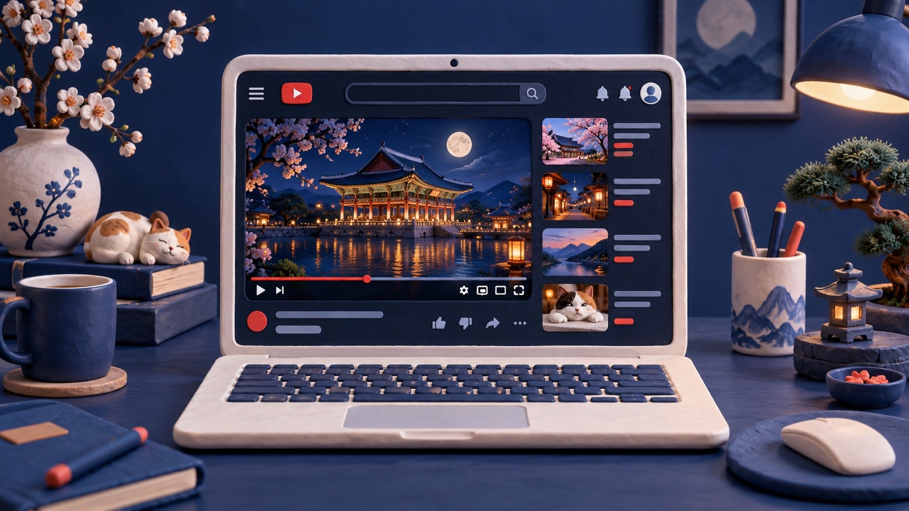
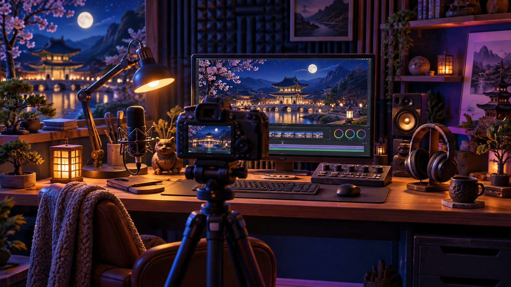

01 / 수업용 가상 실습 안내
좋아하는 걸
영상으로
물건 소개와 취미 추천으로 준비하는 첫 영상
무엇을 찍을지 고민하는 유튜브 입문자를 위해, 내가 잘 아는 소재를 고르고 소개 대본과 촬영 장면을 준비하는 안내서입니다.
머그컵과 산책 이야기는 설명을 위한 가상 예시입니다. 실제 촬영은 필수 과제가 아닙니다.
02 / 한 걸음씩 준비해요
첫 영상을 준비하는 다섯 단계
각 제목을 누르면 바로 아래 내용이 열립니다. 다시 누르면 그 내용만 닫힙니다.
특별한 성과보다 내가 설명할 수 있는 경험부터 시작해요.
내가 자주 쓰는 물건 하나 또는 즐기는 취미 하나를 고릅니다. 왜 자주 쓰는지, 언제 즐기는지 말할 수 있으면 시작할 수 있습니다.
머그컵은 손잡이를 잡는 느낌이나 씻기 편한지를 살펴볼 수 있어요. 산책은 좋아하는 시간대와 처음 나서는 사람이 준비할 것을 이야기할 수 있습니다. 제품 성능을 모르면 추측하지 말고 직접 관찰할 수 있는 특징부터 다룹니다.
소개할 소재 하나와 “이것을 좋아하는 이유” 한 문장을 적습니다.
내 취향을 소개하면서, 누구에게 잘 맞을지도 함께 말해요.
물건은 좋은 점 두 가지와 아쉬운 점 한 가지를 골라봅니다. 취미는 즐거운 점, 시작하는 방법, 불편할 수 있는 점을 설명합니다. 확인하지 않은 수치나 효과는 넣지 않습니다.
마지막에는 어떤 사람에게 추천하는지도 덧붙입니다. 집에서 차를 천천히 마시는 사람에게 추천할 수 있지만, 이동용 컵을 찾는 사람에게는 다른 형태가 편할 수 있습니다.
“손잡이가 넓어 잡기 편하지만 가방에 넣고 다니기에는 부피가 큽니다.”
좋은 점 두 가지와 아쉬운 점 한 가지를 적어보세요.
무엇을 소개하고, 어떤 장면을 보여줄까요?
취미를 소개할 때도 무엇인지 말하고, 즐기는 장면과 좋은 점·주의할 점을 설명하면 됩니다. 내 경험이 아닌 문장을 실제 경험처럼 말하지 말고 내 소재에 맞게 바꿉니다.
“오늘은 집에서 차를 마실 때 쓰는 머그컵을 소개할게요. 손잡이가 넓어서 잡는 모습을 보여드리겠습니다. 입구가 넓어 안쪽을 씻는 모습도 잘 보입니다. 다만 부피가 커서 밖에 들고 다니기에는 불편할 수 있어요. 집에서 쓰는 컵을 찾는다면 손잡이와 씻기 편한지를 함께 살펴보세요.”
무엇을 소개하는지 → 사용하는 장면 → 좋은 점과 아쉬운 점 → 추천 대상
전체 모습 · 사용하는 모습 · 가까운 세부 모습
한 장소에서 세 장면을 준비합니다. 머그컵이라면 탁자 위 전체 모습, 손잡이를 잡는 모습, 입구와 안쪽 모습입니다. 산책이라면 출발 장소, 걷는 길, 쉬는 장소를 담을 수 있어요.
밝은 곳에서 스마트폰을 안정적으로 두고 짧게 찍습니다. 주변 사람이 알아볼 수 있게 찍혔다면 공개 전에 동의를 확인하거나 다른 장면을 고릅니다. 오늘 모두 촬영할 필요는 없습니다.
내 소재의 전체 모습 / 사용하는 장면 / 설명할 세부 모습 한 가지
보여준 내용이 무엇인지 알 수 있게 정해요.
제목은 실제로 보여준 내용과 맞춥니다. “머그컵 고를 때 살펴보는 세 가지” 또는 “처음 산책을 시작할 때 준비할 것”처럼 내용을 알 수 있게 적습니다.
썸네일에는 대표 사진과 짧은 제목을 넣고 작은 화면에서도 읽히는지 확인합니다. 조회수를 보장하는 문구보다 내용과 어울리는 제목을 고릅니다. 다음 영상은 같은 소재의 사용법이나 다른 취미처럼 이어갈 작은 주제로 정합니다.
이어 만들 수 있는 작은 주제 한 가지를 적습니다.
촬영물을 완성하는 날이 아니라, 시작할 준비를 해봅니다.
내가 직접 확인한 특징을 말하고, 내 경험이 아닌 문장은 예시로 다룹니다. 오늘 준비한 메모를 다음 영상의 출발점으로 삼아보세요.
- 소개할 소재 하나
- 그 소재를 좋아하는 이유 한 문장
- 소개 대본 하나
- 전체·사용·세부 장면 세 가지
- 내용과 맞는 제목 하나
- 다음 영상 아이디어 한 개
장면을 떠올리는 이미지
세 장면을 미리 그려보세요


오늘 한 가지 해보기
소개할 소재 하나를 고르고, 좋아하는 이유를 한 문장으로 적어보세요.